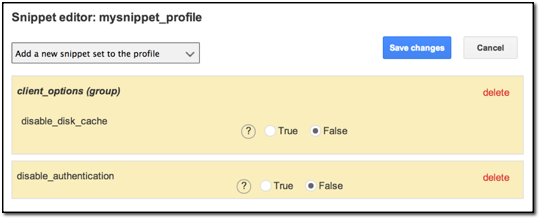
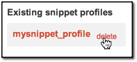

Manage snippet profiles¶
You can customize your database view and available features in Google Earth Enterprise Client (EC) by setting up snippet profiles in the the GEE Server admin console.
Snippets are different properties and options that may be specified for a Fusion 3D database. When you connect to a database in Google Earth EC, snippets control its appearance and behavior. GEE Server lets you set your snippet preferences, then combine snippets into a snippet profile, which can then be applied to any database that you publish. The snippet profile settings then modify the database’s behavior and appearance when you connect to it in Google Earth EC.
For example, many of these preferences (or snippets) apply to display characteristics, such as showing or hiding different elements such as the Google logo or your own co-brand logo. You can also apply other settings, such as caching data on disk, enabling authentication, hiding user data in the About dialog, and specifying a reverse geocoder server URL.
Tip
Google Earth EC recognizes only the settings made by the first database that you connect to in Google Earth EC. This applies when you are connecting to multiple databases.
Warning
If you are working with multiple GEE Server users on multiple workstations, it is important to remember that snippet profiles can be accessed by all users at the same time. Be sure to coordinate with any other users to avoid overwriting snippet profile settings.
- Creating a snippet profile
- Editing snippet settings
- Table of snippet settings
- Modifying snippet profiles
- Deleting snippet profiles
To create a snippet profile:
- Access the Google Earth Enterprise Server Admin console in a browser window by going to myserver.mydomainname.com/admin, replacing myserver and mydomainname with your server and domain.
- Sign in with the default credentials or the username and
password assigned to you:
- Default username: geapacheuser
- Default password: geeadmin
Note
If you do not know your username and password, contact your Google Earth Enterprise Server System Administrator.
Click Snippet profiles to display your snippet profiles.
Click Create New. The Create new snippet profile dialog appears.

Enter a name for the new snippet profile and click the Create button. The snippet profile name appears in red in the Existing snippet profile list and the Snippet editor opens.
To edit snippet settings:
Click the Add a new snippet set to the profile drop-down to display the list of available snippets.

Select a snippet from the list. The selected snippet options are added to the current snippet profile and appear in the profile list.

You can select some snippets multiple times per profile, For example, you may want to add more than one customized logo to be displayed in Google Earth EC. For those snippets that cannot be added to a profile more than once, such as disable authentication, the snippet name is grayed out and a checkmark appears next to it in the snippet list.

Edit the snippet profile to specify values for the snippets. See the following Snippet Settings table for snippet settings.
Tip
When you add a snippet, you must enter values in the empty fields; if you want the snippet string to be empty, which is the default setting, you should not add the snippet and edit its values.
When you have finished adding snippets and specifying values for your snippet profile, click the Save changes button.
Now you can apply your snippet profile to any 3D database you publish.
Snippet Settings
The following table lists the syntax for all of the available dbRoot snippets.
Snippet Settings
| Snippet Name | Purpose | Syntax | Notes |
|---|---|---|---|
bbs_server_info |
Specify BBS Server info. | base_url — URL of the server, including protocol, domain name, and port.
file_submit_path — Path on server where files can be submitted.
name — Name that will be displayed in context menu to user. Must be translated.
post_wizard_path — Path on server where wizard can be found |
|
client_options |
Disable disk caching in Google Earth EC. | disable_disk_cache |
Default value is False |
cobrand_info |
Add custom logo to Google Earth EC display window. | logo_url — URL of image to use as logo
screen_size — Positive value <=1 specifies scale with screen.
tie_point — Controls the reference point in the overlay
x_coord.is_relative — If True, the coordinate is relative to the screen
x_coord.value — Coordinate value Interpretation depends on value set in x_coord.is_relative.
y_coord.is_relative — If True, the coordinate is relative to the screen
``y_coord.value — Coordinate value. Interpretation depends on value set in y_coord.is_relative. |
logo_url can be remote or local.
screen_size makes logo scalable with screen by forcing its width to occupy a fraction of the screen.
For example, a value of 0.25 sets the given logo to occupy 25% of the screen. |
default_web_page_intl_url |
Default location of web page in Google Earth EC. | https://www.google.com/?hl=%251 |
Can be set to an internal IP or host name address. Default web page value in GEE is an empty string. |
disable_authentication |
Disable session cookie-based authentication. | boolean |
Indicates that this database does not require session cookie-based authentication. |
earth_intl_url |
Location of international page for Google Earth. | http://earth.google.com |
|
elevation_service _base_url |
Terrain elevation service URL. | If field is empty, service is unavailable. | |
hide_user_data |
True = Suppress user name in the Help -> About window. False = Display user name. |
boolean |
Default is False. |
keyboard_shortcuts_url |
URL for keyboard shortcuts page.
If not specified, this URL is built from user_guide_intl _url as
user_guide_intl _url + keyboard.html |
Can be set to an internal IP or host name address. | |
model |
|
||
privacy_policy_url |
URL for privacy policy. | IP address or host name |
Can be set to an internal IP or host name address. |
release_notes_url |
URL for release notes. | IP address or host name |
Can be set to an internal IP or host name address. |
reverse_geocoder_protocol_version |
Reverse geocoder protocol version. | numeric value |
Default is 3 which is the protocol supported by newer clients. |
reverse_geocoder_url |
Reverse geocoder server URL. | ||
show_signin_button |
If True, shows the signin button in the top-right corner of the display window. | boolean |
|
startup_tips_intl_url |
Localize international URL from which to load startup tips for Earth 7.0 or higher. | ||
support_answer_intl_url |
Localize international URL for support answers. | https://support.google.com/earth/#topic=4363013 |
|
support_center_intl_url |
Localize international URL for the support center. | http://support.google.com/earth/ |
|
support_request_intl_url |
Localize international URL for support requests. | https://support.google.com/earth/#topic=2364258 |
|
support_topic_intl_url |
Localize international URL for support topics. | http://www.google.com/earth/learn/ |
|
swoop_parameters |
Controls how far from a target swooping should start. | start_dist_in_meters |
|
tutorial_url |
URL for tutorial page.
If URL is not specified, this URL is built from user_guide_intl_url
as user_guide_intl_url +``tutorials/index.html``. |
http://www.google.com/earth/learn/ |
|
use_ge_logo |
Shows/hides Google Earth logo in lower-right corner of display. | boolean |
Default is True. |
user_guide_intl_url |
Localize international URL for documentation. | http://www.google.com/earth/learn/ |
Defaults to local PDF file for Google Earth EC. Can be set to an internal IP or hostname address. |
valid_database |
Validates the database name and URL. | database_name ``— Human-readable name of database, for example, “Primary Database” or “Digital Globe Database”
``database_url— URL of server. This can include a path and a query, and must be a well-formed, absolute URL |
To modify a snippet profile:
To change the snippets in a snippet profile, click the snippet profile name in the Existing snippet profiles list that you want to edit.
The Snippet editor appears with the name of your selected snippet profile and the list of included snippets.
All previously selected snippets can be edited with new options and settings.
To add a snippet, click the drop-down list to select a new snippet.
To delete a snippet from your profile, click delete in the snippet settings.

Click Save Changes.
To delete a snippet profile:
Hover your cursor over the name of the snippet profile that you want to delete. The delete option appears.

A message prompts you to confirm that you want to delete the selected snippet profile.
Click Yes.
The snippet profile disappears from the Existing snippet profiles list.
Learn more